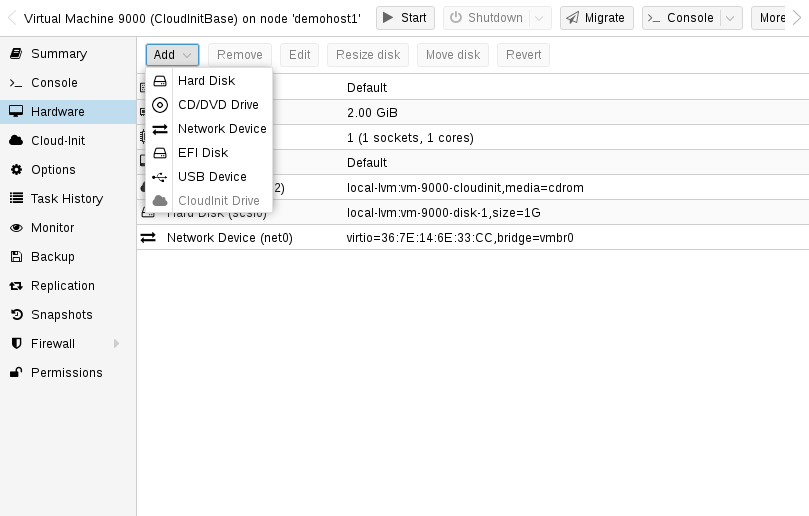
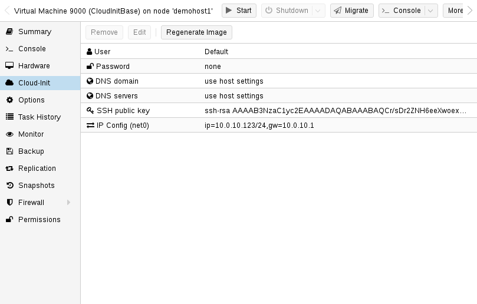

Cloud-Init is the de facto multi-distribution package that handles early initialization of a virtual machine instance. Using Cloud-Init, configuration of network devices and ssh keys on the hypervisor side is possible. When the VM starts for the first time, the Cloud-Init software inside the VM will apply those settings.
Many Linux distributions provide ready-to-use Cloud-Init images, mostly designed for OpenStack. These images will also work with Proxmox VE. While it may seem convenient to get such ready-to-use images, we usually recommended to prepare the images by yourself. The advantage is that you will know exactly what you have installed, and this helps you later to easily customize the image for your needs.
Once you have created such a Cloud-Init image we recommend to convert it into a VM template. From a VM template you can quickly create linked clones, so this is a fast method to roll out new VM instances. You just need to configure the network (and maybe the ssh keys) before you start the new VM.
We recommend using SSH key-based authentication to login to the VMs provisioned by Cloud-Init. It is also possible to set a password, but this is not as safe as using SSH key-based authentication because Proxmox VE needs to store an encrypted version of that password inside the Cloud-Init data.
Proxmox VE generates an ISO image to pass the Cloud-Init data to the VM. For that purpose, all Cloud-Init VMs need to have an assigned CD-ROM drive. Usually, a serial console should be added and used as a display. Many Cloud-Init images rely on this, it is a requirement for OpenStack. However, other images might have problems with this configuration. Switch back to the default display configuration if using a serial console doesn’t work.
The first step is to prepare your VM. Basically you can use any VM. Simply install the Cloud-Init packages inside the VM that you want to prepare. On Debian/Ubuntu based systems this is as simple as:
apt-get install cloud-init
This command is not intended to be executed on the Proxmox VE host, but only inside the VM.
Already many distributions provide ready-to-use Cloud-Init images (provided
as .qcow2 files), so alternatively you can simply download and
import such images. For the following example, we will use the cloud
image provided by Ubuntu at https://cloud-images.ubuntu.com.
# download the image wget https://cloud-images.ubuntu.com/bionic/current/bionic-server-cloudimg-amd64.img # create a new VM with VirtIO SCSI controller qm create 9000 --memory 2048 --net0 virtio,bridge=vmbr0 --scsihw virtio-scsi-pci # import the downloaded disk to the local-lvm storage, attaching it as a SCSI drive qm set 9000 --scsi0 local-lvm:0,import-from=/path/to/bionic-server-cloudimg-amd64.img
Ubuntu Cloud-Init images require the virtio-scsi-pci
controller type for SCSI drives.
Add Cloud-Init CD-ROM drive.

The next step is to configure a CD-ROM drive, which will be used to pass the Cloud-Init data to the VM.
qm set 9000 --ide2 local-lvm:cloudinit
To be able to boot directly from the Cloud-Init image, set the boot parameter
to order=scsi0 to restrict BIOS to boot from this disk only. This will speed
up booting, because VM BIOS skips the testing for a bootable CD-ROM.
qm set 9000 --boot order=scsi0
For many Cloud-Init images, it is required to configure a serial console and use it as a display. If the configuration doesn’t work for a given image however, switch back to the default display instead.
qm set 9000 --serial0 socket --vga serial0
In a last step, it is helpful to convert the VM into a template. From this template you can then quickly create linked clones. The deployment from VM templates is much faster than creating a full clone (copy).
qm template 9000

You can easily deploy such a template by cloning:
qm clone 9000 123 --name ubuntu2
Then configure the SSH public key used for authentication, and configure the IP setup:
qm set 123 --sshkey ~/.ssh/id_rsa.pub qm set 123 --ipconfig0 ip=10.0.10.123/24,gw=10.0.10.1
You can also configure all the Cloud-Init options using a single command only. We have simply split the above example to separate the commands for reducing the line length. Also make sure to adopt the IP setup for your specific environment.
The Cloud-Init integration also allows custom config files to be used instead
of the automatically generated configs. This is done via the cicustom
option on the command line:
qm set 9000 --cicustom "user=<volume>,network=<volume>,meta=<volume>"
The custom config files have to be on a storage that supports snippets and have to be available on all nodes the VM is going to be migrated to. Otherwise the VM won’t be able to start. For example:
qm set 9000 --cicustom "user=local:snippets/userconfig.yaml"
There are three kinds of configs for Cloud-Init. The first one is the user
config as seen in the example above. The second is the network config and
the third the meta config. They can all be specified together or mixed
and matched however needed.
The automatically generated config will be used for any that don’t have a
custom config file specified.
The generated config can be dumped to serve as a base for custom configs:
qm cloudinit dump 9000 user
The same command exists for network and meta.
There is a reimplementation of Cloud-Init available for Windows called cloudbase-init. Not every feature of Cloud-Init is available with Cloudbase-Init, and some features differ compared to Cloud-Init.
Cloudbase-Init requires both ostype set to any Windows version and the
citype set to configdrive2, which is the default with any Windows
ostype.
There are no ready-made cloud images for Windows available for free. Using Cloudbase-Init requires manually installing and configuring a Windows guest.
The first step is to install Windows in a VM. Download and install Cloudbase-Init in the guest. It may be necessary to install the Beta version. Don’t run Sysprep at the end of the installation. Instead configure Cloudbase-Init first.
A few common options to set would be:
Administrators group
true to allow setting the password
in the VM config
no to not require a new password on
login
true to allow renaming the default
Administrator user to the username specified with username
cloudbaseinit.metadata.services.configdrive.ConfigDriveService for
Cloudbase-Init to first check this service. Otherwise it may take a few minutes
for Cloudbase-Init to configure the system after boot.
Some plugins, for example the SetHostnamePlugin, require reboots and will do
so automatically. To disable automatic reboots by Cloudbase-Init, you can set
allow_reboot to false.
A full set of configuration options can be found in the official cloudbase-init documentation.
It can make sense to make a snapshot after configuring in case some parts of the config still need adjustments. After configuring Cloudbase-Init you can start creating the template. Shutdown the Windows guest, add a Cloud-Init disk and make it into a template.
qm set 9000 --ide2 local-lvm:cloudinit qm template 9000
Clone the template into a new VM:
qm clone 9000 123 --name windows123
Then set the password, network config and SSH key:
qm set 123 --cipassword <password> qm set 123 --ipconfig0 ip=10.0.10.123/24,gw=10.0.10.1 qm set 123 --sshkey ~/.ssh/id_rsa.pub
Make sure that the ostype is set to any Windows version before setting the
password. Otherwise the password will be encrypted and Cloudbase-Init will use
the encrypted password as plaintext password.
When everything is set, start the cloned guest. On the first boot the login won’t work and it will reboot automatically for the changed hostname. After the reboot the new password should be set and login should work.
Sysprep is a feature to reset the configuration of Windows and provide a new
system. This can be used in conjunction with Cloudbase-Init to create a clean
template.
When using Sysprep there are 2 configuration files that need to be adapted.
The first one is the normal configuration file, the second one is the one
ending in -unattend.conf.
Cloudbase-Init runs in 2 steps, first the Sysprep step using the
-unattend.conf and then the regular step using the primary config file.
For Windows Server running Sysprep with the provided Unattend.xml file
should work out of the box. Normal Windows versions however require additional
steps:
Enable the Administrator user:
net user Administrator /active:yes`
Modify Unattend.xml to include the command to enable the Administrator user
on the first boot after sysprepping:
<RunSynchronousCommand wcm:action="add"> <Path>net user administrator /active:yes</Path> <Order>1</Order> <Description>Enable Administrator User</Description> </RunSynchronousCommand>
Make sure the <Order> does not conflict with other synchronous commands.
Modify <Order> of the Cloudbase-Init command to run after this one by
increasing the number to a higher value: <Order>2</Order>
(Windows 11 only) Remove the conflicting Microsoft.OneDriveSync package:
Get-AppxPackage -AllUsers Microsoft.OneDriveSync | Remove-AppxPackage -AllUsers
cd into the Cloudbase-Init config directory:
cd 'C:\Program Files\Cloudbase Solutions\Cloudbase-Init\conf'
Run Sysprep:
C:\Windows\System32\Sysprep\sysprep.exe /generalize /oobe /unattend:Unattend.xml
After following the above steps the VM should be in shut down state due to the Sysprep. Now you can make it into a template, clone it and configure it as needed.
cicustom: [meta=<volume>] [,network=<volume>] [,user=<volume>] [,vendor=<volume>]
Specify custom files to replace the automatically generated ones at start.
meta=<volume>
network=<volume>
user=<volume>
vendor=<volume>
cipassword: <string>
citype: <configdrive2 | nocloud | opennebula>
ostype. We use the nocloud format for Linux, and configdrive2 for windows.
ciupgrade: <boolean> (default = 1)
ciuser: <string>
ipconfig[n]: [gw=<GatewayIPv4>] [,gw6=<GatewayIPv6>] [,ip=<IPv4Format/CIDR>] [,ip6=<IPv6Format/CIDR>]
Specify IP addresses and gateways for the corresponding interface.
IP addresses use CIDR notation, gateways are optional but need an IP of the same type specified.
The special string dhcp can be used for IP addresses to use DHCP, in which case no explicit gateway should be provided. For IPv6 the special string auto can be used to use stateless autoconfiguration. This requires cloud-init 19.4 or newer.
If cloud-init is enabled and neither an IPv4 nor an IPv6 address is specified, it defaults to using dhcp on IPv4.
gw=<GatewayIPv4>
Default gateway for IPv4 traffic.
Requires option(s): ip
gw6=<GatewayIPv6>
Default gateway for IPv6 traffic.
Requires option(s): ip6
ip=<IPv4Format/CIDR> (default = dhcp)
ip6=<IPv6Format/CIDR> (default = dhcp)
nameserver: <string>
searchdomain: <string>
sshkeys: <string>